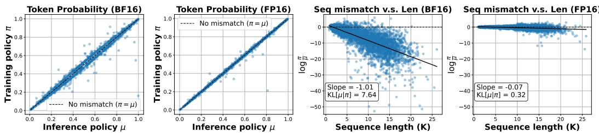
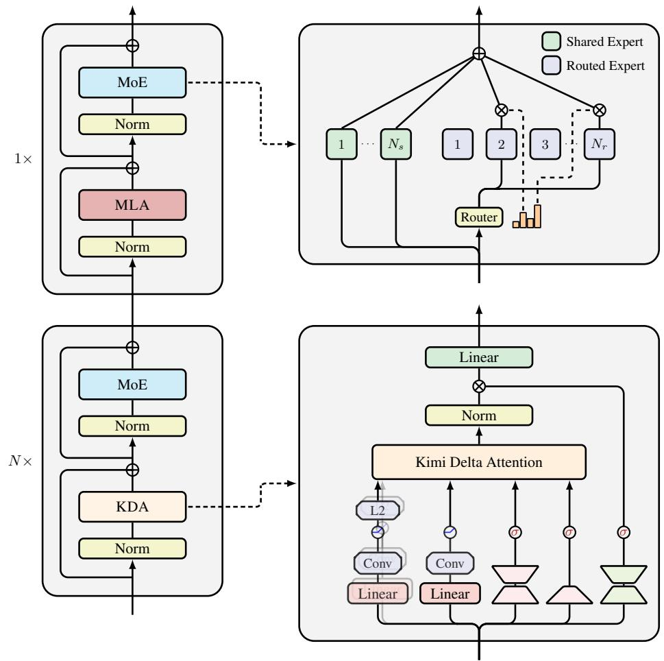

📚 每日论文简报
2025-11-01
为您精选了 6 篇高质量 AI 论文
🔍 宏观核心主题
核心研究主题
- 因果推断与政策学习在机器学习模型中的应用，强调了在数据处理和推断中的挑战与解决方案。
- 分布式学习的通信效率提升，特别是在异构环境下的模型更新和压缩技术的研究。
- 异常检测技术在工业应用中的优化，尤其是在钢铁轧制和时间序列分析领域的实现。
- 神经网络与无似然推断在逆问题和动态系统中的应用，关注模型的稳定性与适应性。
- 人工智能代理的安全性与自主性之间的平衡，探讨如何有效授权以限制其操作范围。
技术趋势
- 多模态模型的能力提升，特别是在视觉和语言处理中的新方法研究，显示出对跨领域整合的重视。
- 强化学习与控制理论的结合，强调动态环境中的层次结构决策过程的复杂性与重要性。
- 大语言模型的优化策略，特别是在推理和资源利用方面，反映出对效率与准确性双重目标的追求。
📊 中观聚类分析
主题 1: 这些论文共同探讨了因果推断、政策学习和机器学习模型在处理数据和推断中的应用与挑战
-
LLMs Process Lists With General Filter Heads
探讨了大型语言模型在列表处理任务中的机制，揭示了它们如何编码通用过滤操作的因果表示。 -
Faithful and Fast Influence Function via Advanced Sampling
提出了一种高效的影响函数计算方法，通过先进的采样技术来解释训练数据对黑箱模型的影响。 -
A Unified Theory for Causal Inference: Direct Debiased Machine Learning via Bregman-Riesz Regression
引入了一种统一的因果推断理论，将多种方法整合用于平均处理效应的估计。 -
Bridging the Gap between Empirical Welfare Maximization and Conditional Average Treatment Effect Estimation in Policy Learning
探讨了政策学习中的两种主要方法，强调了经验福利最大化与条件平均处理效应估计之间的联系。 -
Assessment of the conditional exchangeability assumption in causal machine learning models: a simulation study
通过模拟研究评估了因果机器学习模型在个体化治疗效应预测中的条件可交换性假设的表现。
主题 2: 提高分布式学习中的通信效率，特别是在异构环境下的模型更新和压缩技术
-
Non-Convex Over-the-Air Heterogeneous Federated Learning: A Bias-Variance Trade-off
提出了一种非凸的OTA异构联邦学习框架，强调了偏差-方差权衡在模型更新中的重要性。 -
An All-Reduce Compatible Top-K Compressor for Communication-Efficient Distributed Learning
开发了一种兼容All-Reduce的Top-K压缩器，以提高大规模分布式学习中的通信效率。
主题 3: 异常检测技术在工业应用中的实现与优化，特别是在钢铁轧制和时间序列分析领域
-
Process Integrated Computer Vision for Real-Time Failure Prediction in Steel Rolling Mill
提出了一种基于机器视觉的实时异常检测系统，用于钢铁轧制过程中的故障预测，展示了工业相机在设备监控中的有效应用。 -
MSAD: A Deep Dive into Model Selection for Time series Anomaly Detection
深入探讨了时间序列异常检测中的模型选择问题，强调了不同方法在实际应用中的性能评估和比较。
主题 4: 在逆问题和动态系统中使用神经网络和无似然推断的技术，关注模型的稳定性和适应性
-
How Regularization Terms Make Invertible Neural Networks Bayesian Point Estimators
该论文探讨了正则化项如何使可逆神经网络在重建过程中成为已知的贝叶斯点估计器，强调了其在逆问题中的应用潜力。 -
Heuristic Adaptation of Potentially Misspecified Domain Support for Likelihood-Free Inference in Stochastic Dynamical Systems
该论文提出了一种启发式方法，适应可能错误指定的领域支持，以在随机动态系统中进行无似然推断，从而提高了机器人的适应能力。
主题 5: 在人工智能代理的安全性与自主性之间的平衡，以及如何有效授权这些代理以限制其操作范围
-
The Oversight Game: Learning to Cooperatively Balance an AI Agent's Safety and Autonomy
提出了一种最小控制接口，使得AI代理可以在自主行动与请求人类干预之间进行选择，从而增强人类对AI的控制能力。 -
Delegated Authorization for Agents Constrained to Semantic Task-to-Scope Matching
提出了一种新的授权方法，确保大型语言模型驱动的代理在动态调用工具时能够限制其权限，防止超出预定任务范围的操作。
主题 6: 多模态模型在视觉和语言处理中的能力与局限性，以及如何通过新方法提升它们的表现
-
Are Video Models Ready as Zero-Shot Reasoners? An Empirical Study with the MME-CoF Benchmark
本研究通过MME-CoF基准测试，评估视频生成模型在零-shot推理中的能力，揭示其潜在的视觉感知和建模能力。 -
Unveiling Intrinsic Text Bias in Multimodal Large Language Models through Attention Key-Space Analysis
该论文通过注意力关键空间分析，揭示了多模态大语言模型在处理视觉语言数据时存在的内在文本偏见。 -
SteerVLM: Robust Model Control through Lightweight Activation Steering for Vision Language Models
本研究提出了SteerVLM，一个轻量级的引导模块，旨在通过动态调整激活来改善视觉语言模型的输出质量。 -
Kimi Linear: An Expressive, Efficient Attention Architecture
该论文介绍了Kimi Linear，一种混合线性注意力架构，在多个场景下首次在公平比较中超越了全注意力机制。
主题 7: 这组论文围绕强化学习和控制理论中的层次结构和动态环境中的决策过程展开研究
-
Hybrid DQN-TD3 Reinforcement Learning for Autonomous Navigation in Dynamic Environments
提出了一种结合高层次DQN和低层次TD3控制器的层次路径规划和控制框架，以应对动态环境中的自主导航问题。 -
HEIR: Learning Graph-Based Motion Hierarchies
开发了一种基于图的运动层次学习方法，以更好地建模复杂动态系统中的协调运动组件。 -
Action-Driven Processes for Continuous-Time Control
探讨了在连续时间控制中，动作如何驱动状态转变并影响复杂系统的信息流动。
主题 8: 这些论文集中探讨了大语言模型（LLMs）在训练、推理、量化和推理能力评估等方面的挑战与解决方案
-
Defeating the Training-Inference Mismatch via FP16
提出了一种通过FP16来克服大语言模型在强化学习微调中训练与推理不匹配问题的方法。 -
STaMP: Sequence Transformation and Mixed Precision for Low-Precision Activation Quantization
介绍了一种结合序列变换和混合精度的方法，以改善低精度激活量化带来的准确性下降问题。 -
AMO-Bench: Large Language Models Still Struggle in High School Math Competitions
提出了AMO-Bench，一个用于评估大语言模型在高级数学推理能力方面的新基准。 -
Deep sequence models tend to memorize geometrically; it is unclear why
探讨了深度序列模型的记忆存储方式，并提出几何视角来理解其记忆机制。 -
Cross-Platform Evaluation of Reasoning Capabilities in Foundation Models
建立了一个基础模型推理能力的跨平台评估基准，涵盖多个计算范式。 -
The End of Manual Decoding: Towards Truly End-to-End Language Models
提出了AutoDeco架构，实现了真正的端到端语言模型生成，消除了手动解码过程的需求。 -
Learning Pseudorandom Numbers with Transformers: Permuted Congruential Generators, Curricula, and Interpretability
研究了变换器模型在学习伪随机数生成器序列方面的能力，揭示了其在复杂性上的挑战。 -
LoRAQuant: Mixed-Precision Quantization of LoRA to Ultra-Low Bits
提出了一种混合精度量化LoRA的方法，以支持大语言模型的高效参数微调。
主题 9: 在大规模模型推理中优化专家调度和资源利用的策略，以提高效率和准确性
-
ExpertFlow: Adaptive Expert Scheduling and Memory Coordination for Efficient MoE Inference
提出了一种自适应专家调度和内存协调的方法，以降低Mixture-of-Experts架构在推理过程中的内存需求和计算开销。 -
Budgeted Multiple-Expert Deferral
介绍了一种预算化的多专家延迟学习策略，旨在提高机器学习系统在不确定预测情况下的准确性和效率。
主题 10: 这组论文共同关注在不同隐私保护机制下的协方差矩阵估计和主成分分析（PCA），旨在提高数据隐私保护的同时保持统计性能
-
On Purely Private Covariance Estimation
提出了一种简单的扰动机制，用于在纯差分隐私下发布$d$维协方差矩阵，证明了在大数据集上能够达到最优的Frobenius范数误差保证。 -
Tight Differentially Private PCA via Matrix Coherence
提出了一种基于奇异值分解和标准扰动机制的简单高效算法，能够在差分隐私下返回私密的秩-$r$矩阵近似。
📝 微观深度解读
推荐分数: 0.551
📖 简介：本文提出了AutoDeco，一种新颖的架构，通过动态预测解码超参数（温度和top-p），实现真正的“端到端”文本生成。该方法克服了传统解码策略的手动调参限制，显著提升了生成质量和灵活性，并能够通过自然语言指令进行控制。实验结果显示，AutoDeco在多个基准上表现优越，展现出强大的泛化能力。

推荐分数: 0.540
📖 简介：本文提出了一种系统分析框架V-PRISM，研究大语言模型（LLM）在后训练阶段的价值漂移。通过对不同训练阶段的实验，发现监督微调（SFT）阶段确立模型的价值观，而后续的偏好优化对价值观的影响有限。研究结果为数据选择和算法优化提供了实用指导，以提高模型对人类价值的对齐程度。

推荐分数: 0.470
📖 简介：本文提出了AMO-Bench，一个全新的数学推理基准，包含50个经过专家验证的原创问题，确保难度达到国际数学奥林匹克标准。AMO-Bench旨在解决现有基准对顶级语言模型评估的不足，采用自动评分机制评估模型表现。实验结果显示，当前大型语言模型在此基准上的表现不佳，揭示了其在复杂数学推理方面的显著提升空间。

推荐分数: 0.421
📖 简介：本文提出了Evontree框架，旨在解决大语言模型在数据稀缺领域（如医疗）中的适应性问题。该方法通过少量本体规则提取、验证和增强LLM的隐含知识，避免依赖外部数据。实验结果表明，Evontree在医疗问答基准上提升了3.7%的准确率，证明了其有效性和鲁棒性。

推荐分数: 0.403
📖 简介：本文提出了一种简单有效的方法，通过将强化学习（RL）微调中的数值精度从BFloat16（BF16）切换到FP16，解决了训练与推理策略之间的数值不匹配问题。该方法显著提高了优化稳定性、加快了收敛速度，并提升了模型性能，且无需修改模型架构或学习算法。研究结果为RL微调提供了新的视角，并引入了基于“可完美化”数据集的评估框架。

查看详细解读 →
推荐分数: 0.397
📖 简介：本文提出了Kimi Linear架构，结合Kimi Delta Attention (KDA)和全注意力机制，显著提升了长上下文处理的效率与性能。KDA模块通过精细的门控机制优化了记忆控制，减少了高达75%的内存使用，同时在解码吞吐量上提高了2.3至6.3倍。实验结果表明，Kimi Linear在多种任务中超越了传统全注意力模型，提供了高效且高质量的解决方案。

查看详细解读 →